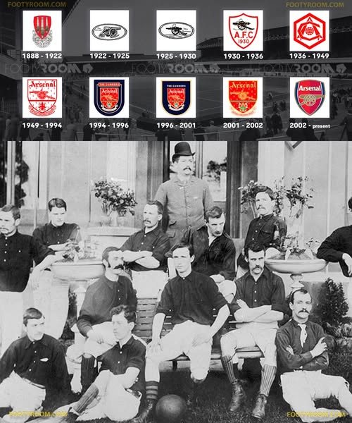

Timeline of Arsenal's History
1886: The Founding
Timeline of Arsenal's History Timeline of Arsenal's History 1886: The Founding Arsenal Football Club was founded by workers at the Royal Arsenal in Woolwich, southeast London. Originally named Dial Square , the club played its first match on December 11, 1886, against Eastern Wanderers and won 6–0. The name was changed to Royal Arsenal shortly afterward. 1893: Turning Professional The club became professional and changed its name to Woolwich Arsenal . Arsenal joined the Football League in 1893 as one of the first southern clubs in the league. 1913: Relocation to Highbury Facing financial difficulties, Woolwich Arsenal moved north across the city to Highbury, North London. The club’s name was simplified to Arsenal .
1930s: Herbert Chapman Era
Herbert Chapman revolutionized the club, winning multiple league titles and introducing innovations like numbered shirts.

2003–04: The Invincibles
Arsenal became the first team in Premier League history to go unbeaten for an entire season.